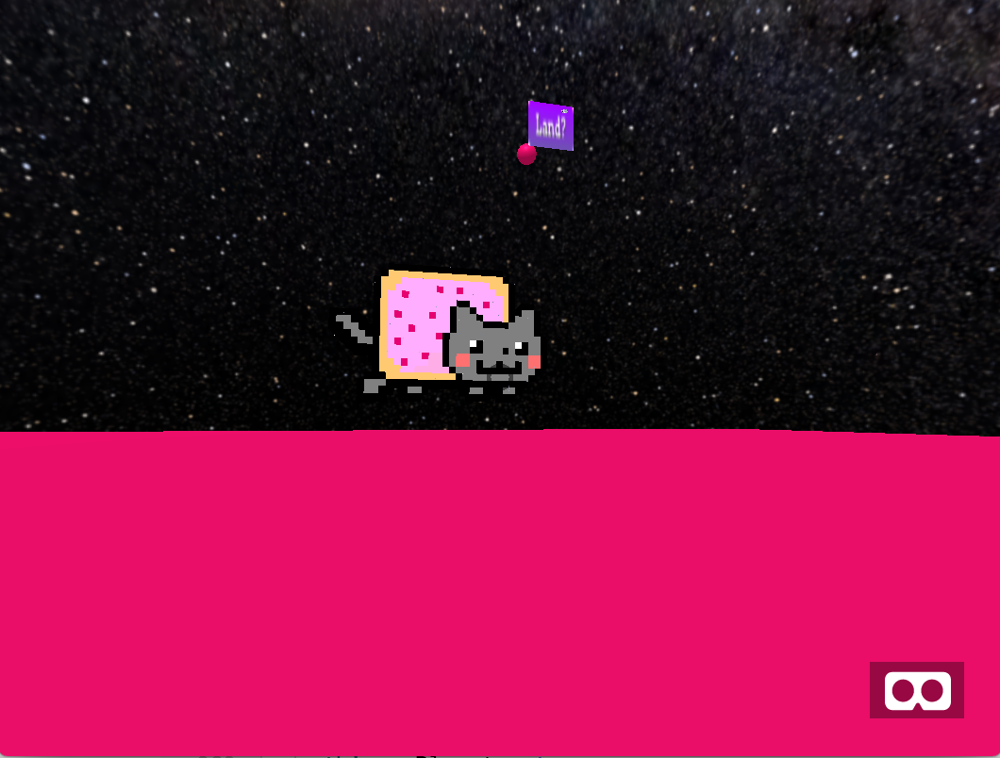
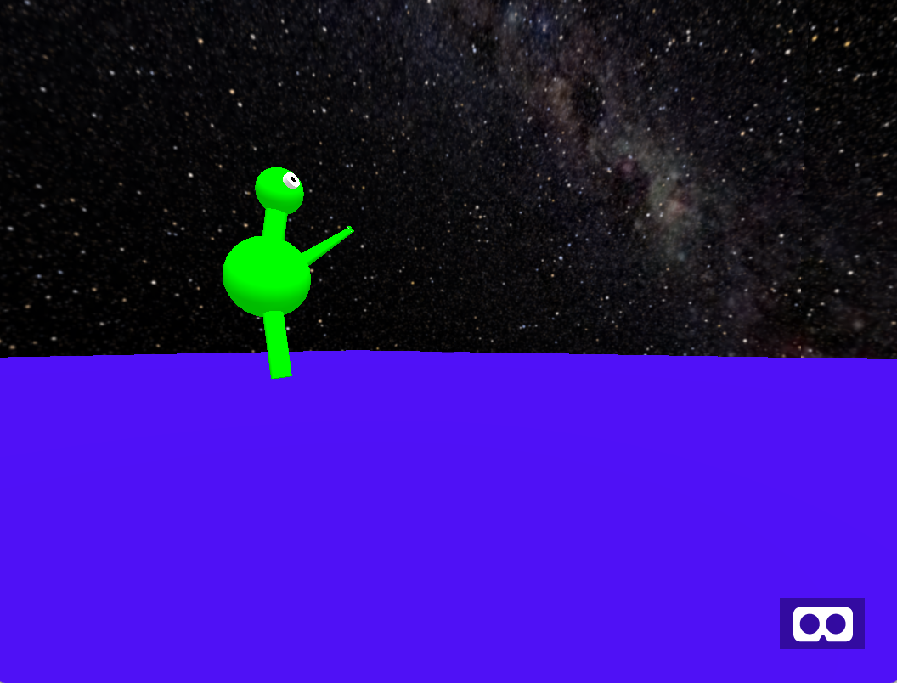

For this week, we fixed some bugs regarding planes not being correctly made all of the time. In addition to this, we added some new models to the game as lifeforms that one can collect.
We also decided on a goal for the game. The player must travel planets and search for a minimum of 3 different species and collect them. After collecting at least 3 different species, the player must then return to their own planet which will be a unique planet at the center of the universe.

Going from here, we want to make things more immersive by adding in music, sound effects, and things such as rotation of planets and movement of life forms. In addition to this, we want to make more steady transitions for the player to be able to land on planets and exit them. At the moment a player can enter a planet immediately with almost no transition and leave a planet and go back to interstellar mode by walking off the edge of the planet. We want to improve on this by giving the user a prompt to enter a planet the moment they get near a planet.